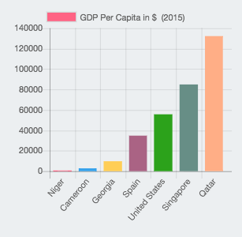
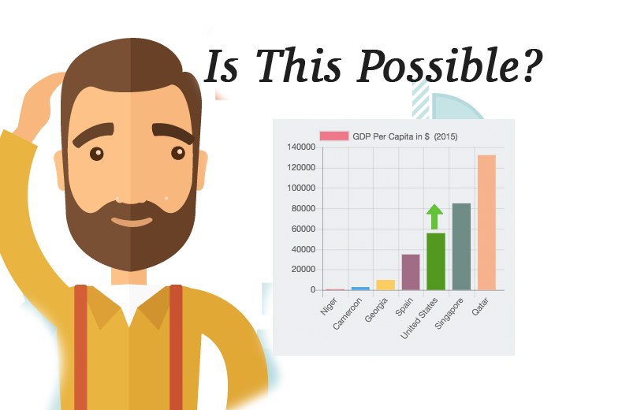
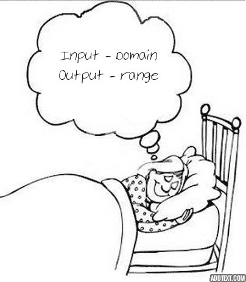

Presenting D3.js

github.com/bumbeishvili
davit.bumbeishvili@gmail.com
Father and bread-winner
Mike Bostok
PhD at Stanford
Former employee of "NY Times"
and other 117 contributors ...

What is D3?
D3 is collection of js modules , designed to work together
Good:Bad:
Decomposing
| Visual | Parts | Helpers |
|---|---|---|
|  |
|
|
Differences
| Other libraries | d3 | |
|---|---|---|
| Low - Helper methods | yep . | yep . |
| Middle - chart parts | yep . | nope . |
| High -api invoke | nope - strict . | nope - broad . |
yep - already written
nope - you will write it
strict - structure already defined
broad - you will define structure
nope - you will write it
strict - structure already defined
broad - you will define structure
Client Requests
Common layouts
| Line | Area | Pie | Tree | ||||
| Treemap | Pack | Force | Projections |
Impressive Examples
Modules
D3 has following modules- Requests
- Selections
- Scales
- Axes
- and here is other 26
Selections
.rect
.rect
.rect
.rect
Scales
Axes
SVG
svg = scallable vector graphic
svg attributes
svg attributes with chaining
Practice
We are going to build bar chart, which visualizes subsistence minimum in Georgia over yearsSteps
- Go to the link - bit.ly/geolab-d3-practice and fork
- get data with d3.csv from bit.ly/geolab-d3-subsistence
- convert gel to number
- append svg
- create scales and variables
- append bars ('rects')
- append axes
- react on hover
- This slide can be found at bit.ly/geolab-d3-steps